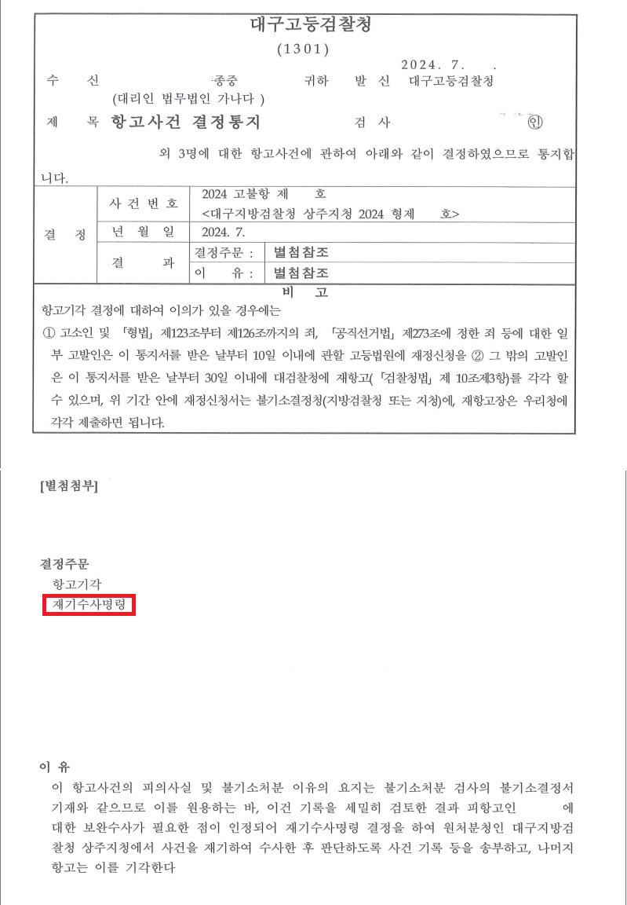

의뢰인은 경북 구미 지역의 한 종중이었습니다. 종중은 오래전부터 선대 분묘 수호와 제사, 위토 관리를 위해 토지를 보유하고 있었으나, 과거 농지와 등기 실무상 문제로 종중원 3인 명의로 각 3분의 1 지분씩 등기해 두었습니다.
이후 토지 일부가 도로공사 사업으로 수용되었고, 수용보상금은 등기명의자 또는 그 상속인들에게 지급되었습니다. 다른 명의수탁자 측은 보상금을 종중에 반환했지만, 핵심 피의자는 수천만 원의 수용보상금을 반환하지 않았고 잔여 토지 지분 이전에도 응하지 않았습니다.
이 사건은 항고 단계에서 새로 만든 사건이 아니었습니다. 신한솔 변호사는 고소장 단계에서 이미 종중 명의신탁의 유효성, 명의수탁자의 보관자 지위, 수용보상금 반환 거부의 횡령성, 관련 판례를 정리해 사건의 기본 구조를 제시했습니다.
그러나 경찰은 이 사건을 단순한 보상금 분쟁 또는 민사관계가 섞인 집안 문제처럼 읽었고, 불송치 결정을 했습니다. 이의신청 이후 검찰 단계에서도 별도의 보완수사 없이 불기소 처분이 내려졌습니다.
문제는 복잡한 재산범죄 사건에서 자주 발생하는 지점에 있었습니다. 종중, 위토, 족보, 명의신탁이라는 단어가 나오면 수사기관이 사건을 형사 구성요건의 문제로 끝까지 분해하지 못하는 경우가 있습니다.
신한솔 변호사는 항고이유서에서 억울함을 반복하지 않았습니다. 수사기관이 이미 제출된 자료 중 무엇을 보지 않았는지, 어떤 법리를 빠뜨렸는지, 어떤 추가 조사가 필요한지를 항목별로 정리했습니다.
피의자가 개인 소유라고 주장한다면 왜 종중이 매매 관련 자료와 세금 자료를 보관하고 있었는지, 같은 구조의 다른 명의수탁자 측은 왜 수용보상금을 종중에 반환했는지, 반환 요구를 받고도 보상금과 잔여 지분을 계속 보유한 이유가 무엇인지 확인해야 했습니다.
대구고등검찰청은 핵심 피의자에 대해 재기수사명령을 내렸습니다. 재기수사 이후 사건은 다시 수사 테이블 위로 올라왔고, 피의자신문이 본격적으로 진행되었습니다.
피의자는 종중의 위토 자료, 명의신탁 경위, 매매 관련 자료, 다른 명의수탁자의 반환 정황, 잔여 지분 반환 거부 경위에 대해 설명해야 했습니다. 장시간 이어진 피의자신문 끝에 피의자는 종중과의 합의 의사를 밝혔습니다.
합의서의 내용은 단순한 금전 지급이 아니었습니다. 피의자는 해당 토지가 종중으로부터 명의수탁받아 관리해 온 토지임을 확인했고, 수용보상금 반환과 잔여 토지 지분 이전 협력, 다른 명의수탁자 측 지분 회복 과정의 협조까지 약정했습니다.
이 사건의 성과는 단순히 재기수사명령을 받았다는 데 있지 않습니다. 불기소로 끝난 줄 알고 버티던 피의자를 다시 검찰 조사석에 앉혔고, 그 조사 국면에서 종중 재산 회복에 필요한 합의서를 받아낸 데 있습니다.
종중은 수용보상금 반환을 확보했고, 명의신탁 사실을 문서로 확인받았으며, 남아 있는 토지 지분 이전 협력과 향후 다른 상속인들과의 분쟁에서도 사용할 수 있는 협조 조항을 확보했습니다.
종중 명의신탁 토지 사건에서 형사고소는 단순한 처벌 요구가 아닙니다. 민사소송이 길어지는 동안 상대방이 등기명의를 근거로 버틸 때, 제대로 정리된 형사절차는 사건의 균형을 바꾸는 계기가 될 수 있습니다.
개인정보와 사건번호 일부를 비식별 처리한 사건 결과 문서 일부입니다. 본 사례는 의뢰인 보호를 위해 필요한 범위에서만 내용을 공개합니다.

종중 재산·수용보상금 반환·불송치 이후 항고 대응으로 고민하고 계십니까.
신한솔 변호사가 직접 기록과 집행위험의 구조를 검토합니다.
변호사 논평
종중 사건은 수사기관에서 자주 잘못 읽힙니다. 그러나 종중, 위토, 족보, 명의신탁이라는 단어는 배경이 아니라 권리관계의 출발점입니다. 이 사건은 고소장, 이의신청서, 항고이유서, 재기수사, 피의자신문, 합의서가 하나의 선으로 이어졌을 때 비로소 종중 재산 회복이 가능해진 사례입니다.